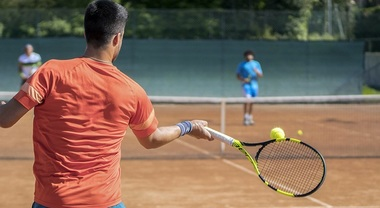

Gli sport individuali costituiscono una categoria unica all'interno del panorama sportivo, in cui l'atleta è la figura centrale e protagonista della competizione. Diversamente dagli sport di squadra, dove la collaborazione è essenziale, negli sport individuali il focus si sposta sull'abilità personale, sulla resistenza mentale e sulla capacità di superare sfide in solitaria.
Tra gli sport individuali più praticati si trovano l'atletica leggera, la ginnastica, il nuoto, il tennis e il golf.

In queste discipline, l'atleta è chiamato a esibire le proprie abilità, forza e destrezza senza il supporto diretto di compagni di squadra. Questo mette in evidenza l'importanza della preparazione individuale, della concentrazione e della disciplina personale.
Nel contesto degli sport individuali, l'allenamento assume un ruolo cruciale. Gli atleti devono perfezionare le proprie abilità tecniche, incrementare la resistenza fisica e sviluppare una mentalità resiliente per affrontare le pressioni della competizione solitaria. La responsabilità individuale è massima, poiché il successo o il fallimento dipendono principalmente dalle prestazioni personali.
La sfida psicologica nello sport individuale è altrettanto significativa. Gli atleti devono gestire la pressione, la competitività e il controllo emotivo senza il supporto immediato di compagni di squadra. Questo richiede una capacità di concentrazione straordinaria e una mentalità forte per superare ostacoli e raggiungere gli obiettivi.
Gli sport individuali offrono anche una maggiore visibilità personale, con gli atleti diventati iconici nel loro campo. Il successo o la sconfitta sono attribuiti in modo diretto all'individuo, creando storie personali di trionfo e resilienza che ispirano gli altri.
In conclusione, gli sport individuali sono un'arena unica in cui gli atleti sfidano se stessi e il proprio limite. Queste discipline enfatizzano l'auto-miglioramento, la disciplina e la resilienza, creando un contesto sportivo che celebra le imprese personali e l'eccellenza individuale.